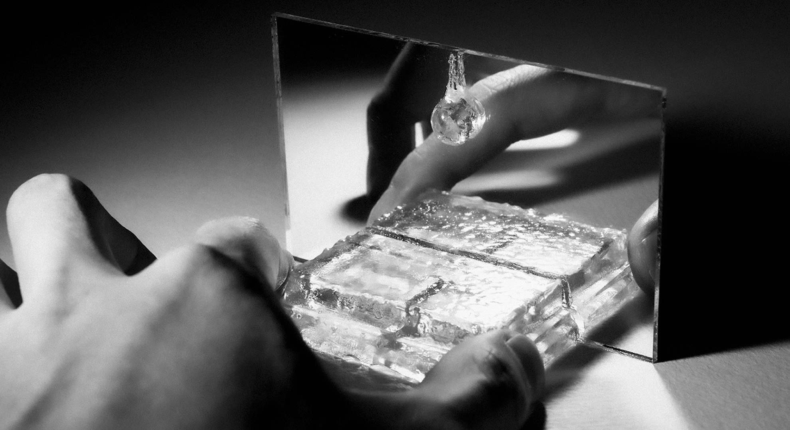
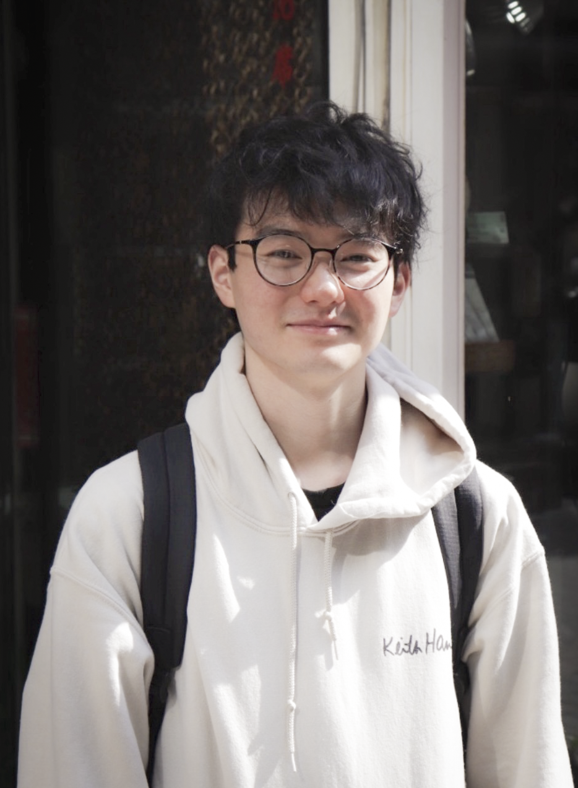
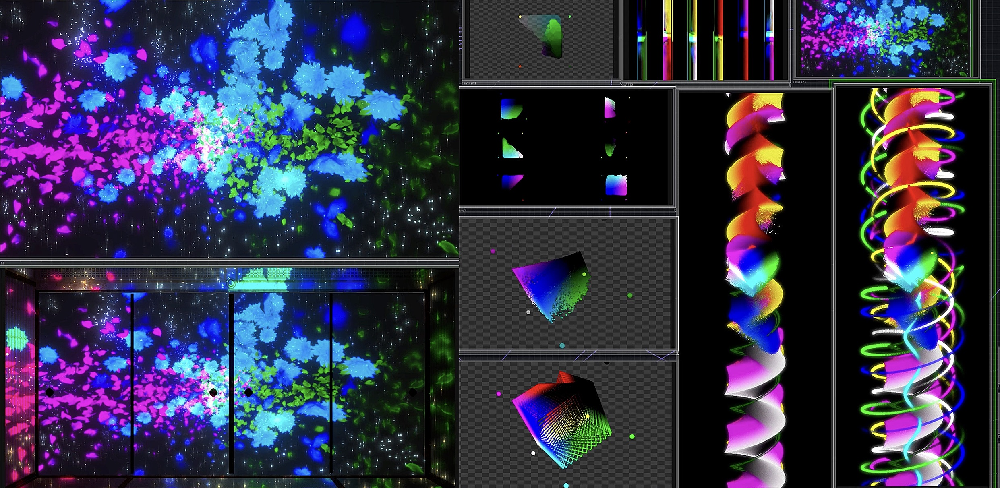
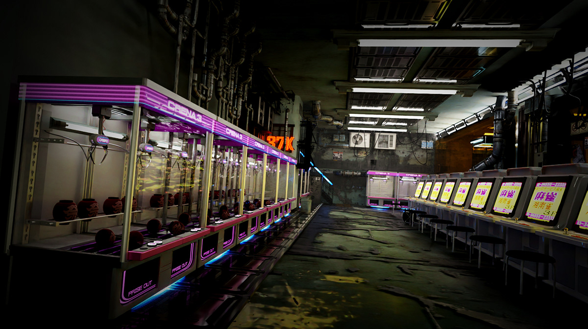
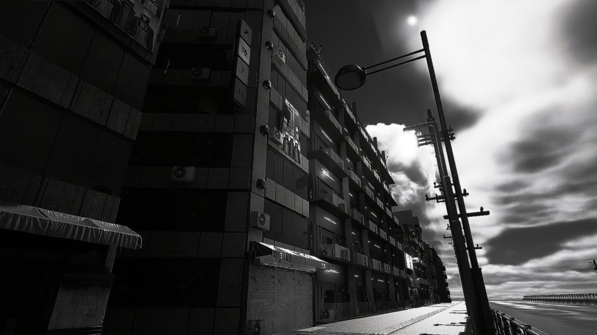
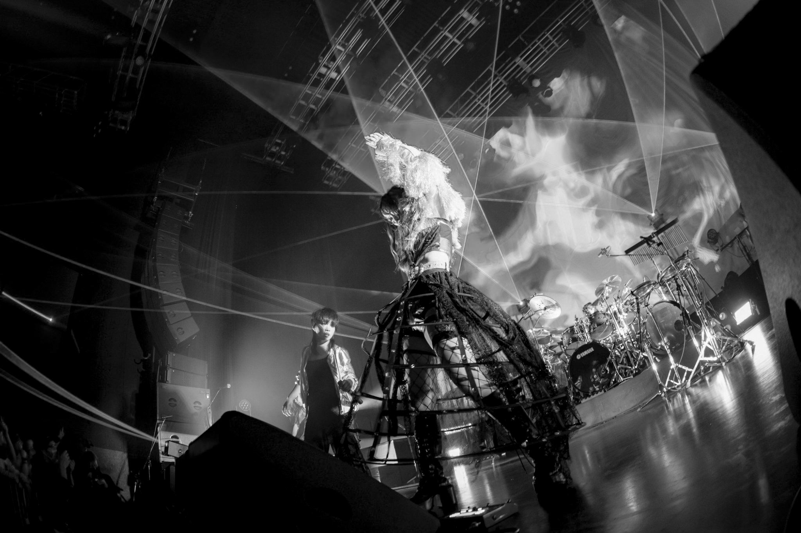
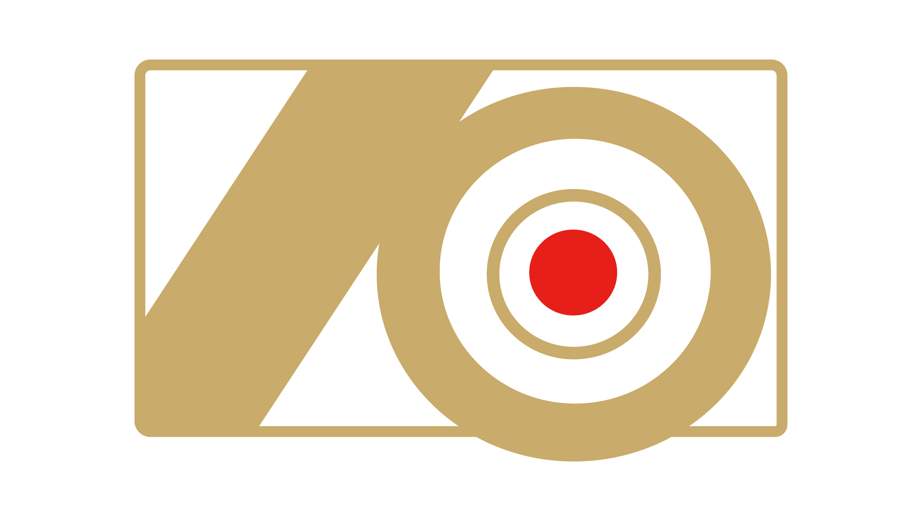
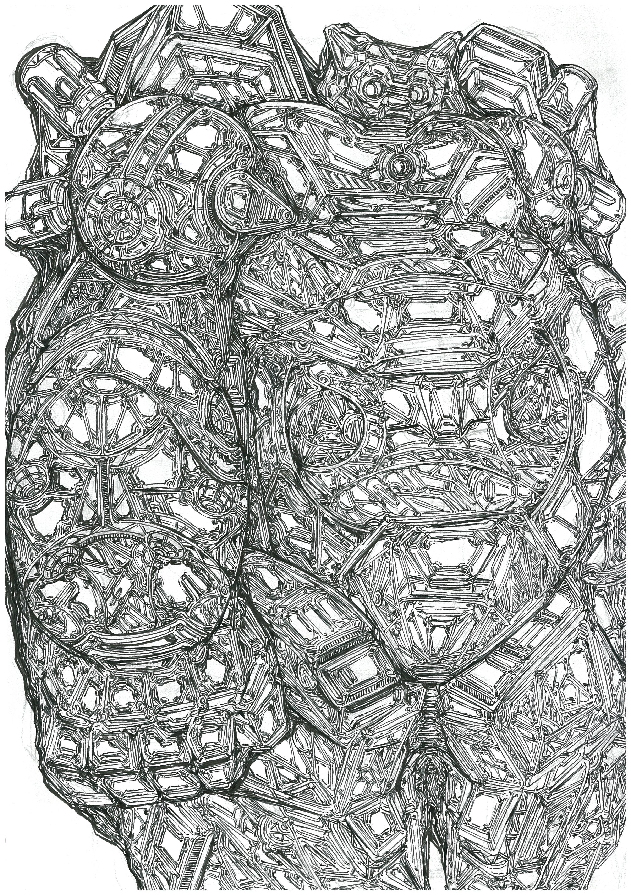
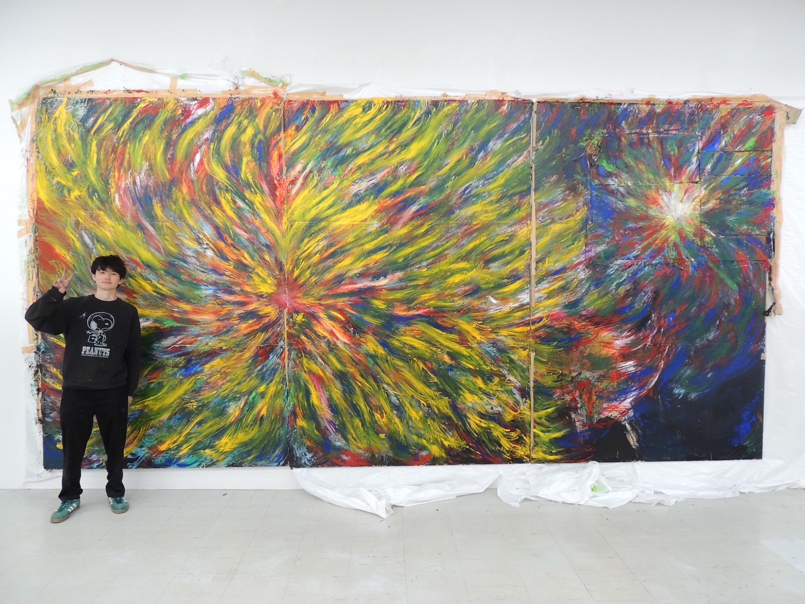
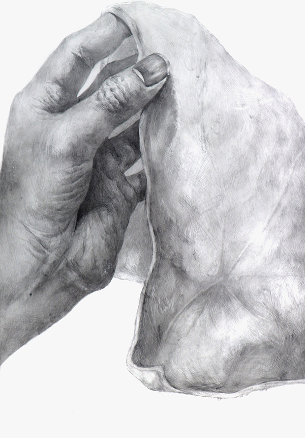

PROJECT / VISUAL FILM
「静けさ」と「光」を軸に、映像と音楽の関係を探った作品。撮影・編集・カラーグレーディングをすべて一人で担い、光のロールオフと水面の揺らぎを組み合わせることで感情の輪郭を可視化しました。
VISUAL PORTFOLIO / 2026
誰かをいい意味で、
驚かせたい。
モーション、3D、グラフィックを横断しながら、空気の温度まで伝わるビジュアルを組み立てています。
PROFILE / CONTACT
アート、デザイン、映像を横断しながら、静けさと光が共存するビジュアルを探っています。企画初期の方向づけから、画面構成、モーションまで一貫して組み立てます。

誰かをいい意味で驚かせる瞬間を大切にしています。映像単体だけでなく、見せ方や余白まで含めて世界観を設計するのが軸です。
MV、ライブ背景映像、ブランドフィルム、3Dビジュアルなど、媒体が変わっても触感のある画づくりを共通言語にしています。
CONTACT
依頼内容、公開媒体、納期感を添えてご連絡ください。内容を確認後、順次返信します。
01
VISUAL FILM
02
LIVE DIRECTION
03
BRAND FILM
04
3D VISUAL
05
AUDIO VISUAL
06
MOTION GRAPHICS
07
INSTALLATION
08
VISUAL IDENTITY
SELECTED WORKS
映像、ライブ演出、ブランドフィルムまで、空気感を軸にまとめたプロジェクト一覧です。









ILLUSTRATION / ART
スケッチ、質感研究、モノクロームの実験など、静かな熱量を持ったイメージ群をまとめています。

Original study / 2025

Urban visual / 2024

Dust series / 2024

Composition study / 2023

Light study / 2024

Texture series / 2025

Atmosphere study / 2024

Monochrome work / 2023